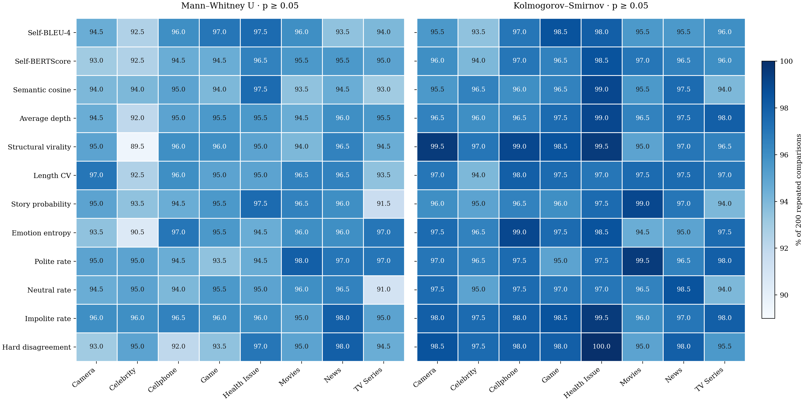
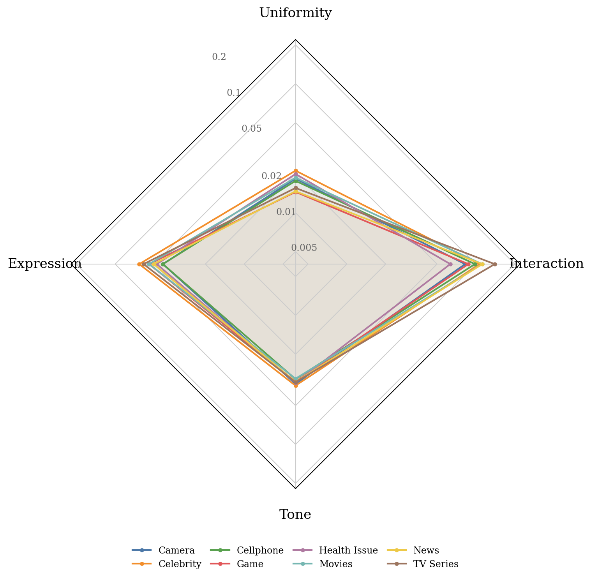
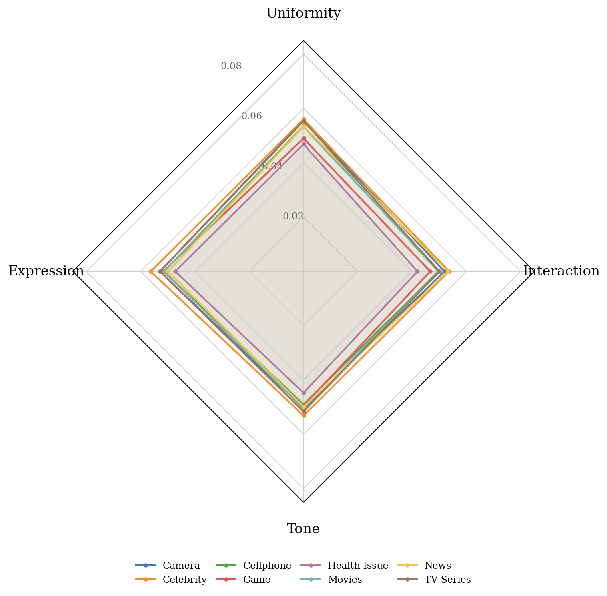
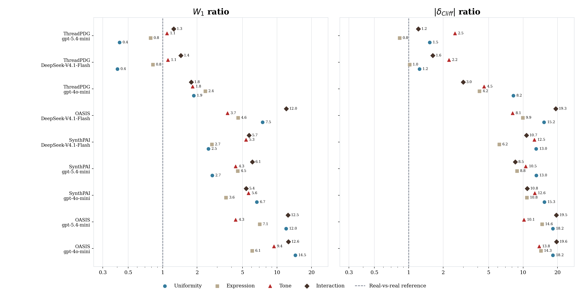

ThreadBench: Benchmarking Realism in Agentic Simulation of Real-world Discussions
Yaoning Yu1 · Ye Yu1 · John Sciarappo2 · Haojing Luo3 · Kai-min Chang2 · Yi-Chia Wang4 · Haohan Wang1ThreadBench is a benchmark for Reddit discussion simulation, built from 9,817 real threads across 8 domains and 116 subdomains. It evaluates LLM-generated discussions with 12 metrics of uniformity, expression, tone and interaction, and introduces ThreadPDG, a Planner–Writer method evaluated against OASIS and SynthPAI.
arXiv:2606.14715 · Paper v2, October 10, 2026 · Website updated
View all 12 metric definitions
Uniformity
- self_bleu_4
- Pairwise 4-gram overlap between comments detects repeated wording.
- self_bertscore_mean_f1
- Contextual similarity between comments detects paraphrases and similar expressions.
- semantic_mean_cosine
- Mean cosine similarity with all-mpnet-base-v2 captures convergence in meaning.
Expression
- mean_story_probability
- StorySeeker estimates the prevalence of personal stories and first-person experiences.
- emotion_entropy
- Entropy of GoEmotions labels measures emotional diversity across comments.
Tone
- polite_rate
- Fraction of comments classified as polite by Intel/polite-guard.
- neutral_rate
- Fraction of comments classified as neutral by Intel/polite-guard.
- impolite_rate
- Fraction of comments classified as impolite by Intel/polite-guard.
- hard_disagree_rate
- Explicit disagreement in parent–reply pairs.
Interaction
- avg_depth
- Mean reply depth measures how far multi-step exchanges develop.
- structural_virality
- Mean shortest-path distance between comments captures the spread of interaction across the reply tree.
- length_cv
- Coefficient of variation of comment lengths measures the mixture of short reactions and longer contributions.
Can LLM agents reproduce the distributional patterns of real online discussion?
LLM-based social simulation evaluation asks whether agents reproduce human behavior, social interaction, and online communities. ThreadBench focuses on how people discuss products, react to events, exchange opinions, and form thread-level patterns.
But generating conversations is not enough. Existing studies focus on individual responses, controlled role-playing, or task performance in simulated environments — not whether a set of simulated discussions reproduces the content patterns and interaction dynamics of real ones, or compares progress across systems.
Reddit discussions are a practical setting for this measurement: public, topic-grounded, and multi-party. They carry advice-seeking, personal experience, disagreement, emotional tone, repeated talking points, and complexity in structure — an observable window into broader social behavior.
ThreadBench combines 9,817 real Reddit threads across eight domains with separate seed, reference and test pools, and a framework that compares generated and real discussions through both comment-derived signals and reply-tree structure.
Watch the difference. These illustrative panels share the same example post. The left depicts varied, nested discussion; the right depicts a fluent but more uniform style. This retained visual demonstration is not a sampled experiment or a live simulator.
Same prompt, very different distributions. The left illustration carries blunt disagreement, lowercase fragments, a downvoted contrarian, and a 3-deep chain. The right illustration is fluent but uniformly polite, validation-led, without disagreement, and structurally flatter. ThreadBench's metrics quantify that gap thread-by-thread.
How does ThreadPDG work?
The Planner reads a complete real seed discussion and plans branches and comment roles. The Writer generates new comments from these plans; up to K = 3 drafts are composed using separate reference-pool statistics. Drafts inherit the seed’s comment slots and reply topology. Independent root-post-only generation remains future work. Method details · Paper §4.
Corpus: 9,817 threads · 8 domains · 116 reported subdomains. The per-domain counts in Table 1 sum to 117; we preserve the paper’s reported total and flag the discrepancy.
OASIS and SynthPAI remain distributionally mismatched to real Reddit threads. ThreadPDG passes 67–92% of metrics with GPT-5.4-mini, 58–100% with DeepSeek-V4.1-Flash, and 17–42% with GPT-4o-mini. The results below — and the full per-domain breakdown — make that gap concrete, family by family. Paper §5, Table 3.
How does ThreadPDG compare with OASIS and SynthPAI?
| # | Method · Model | Uniformity | Expression | Tone | Interaction | Both p ≥ 0.05 ↑ |
|---|---|---|---|---|---|---|
| — | Real reference 150 vs. 150 · 200 repeats/domain | W₁ 0.018 |δ| 0.053 | W₁ 0.052 |δ| 0.052 | W₁ 0.033 |δ| 0.050 | W₁ 0.100 |δ| 0.050 | — sampling reference |
| 1 | ThreadPDG gpt-5.4-mini | W₁ 0.007 ×0.4 |δ| 0.081 ×1.5 | W₁ 0.041 ×0.8 |δ| 0.043 ×0.8 | W₁ 0.036 ×1.1 |δ| 0.126 ×2.5 | W₁ 0.125 ×1.3 |δ| 0.060 ×1.2 | 78 / 96 81.2% |
| 2 | ThreadPDG DeepSeek-V4.1-Flash | W₁ 0.007 ×0.4 |δ| 0.066 ×1.2 | W₁ 0.043 ×0.8 |δ| 0.053 ×1.0 | W₁ 0.036 ×1.1 |δ| 0.112 ×2.2 | W₁ 0.144 ×1.4 |δ| 0.080 ×1.6 | 78 / 96 81.2% |
| 3 | ThreadPDG gpt-4o-mini | W₁ 0.033 ×1.9 |δ| 0.433 ×8.2 | W₁ 0.123 ×2.4 |δ| 0.215 ×4.2 | W₁ 0.060 ×1.8 |δ| 0.227 ×4.5 | W₁ 0.178 ×1.8 |δ| 0.148 ×3.0 | 27 / 96 28.1% |
| 4 | OASIS DeepSeek-V4.1-Flash | W₁ 0.131 ×7.5 |δ| 0.805 ×15.2 | W₁ 0.238 ×4.6 |δ| 0.513 ×9.9 | W₁ 0.121 ×3.7 |δ| 0.403 ×8.1 | W₁ 1.207 ×12.0 |δ| 0.957 ×19.3 | 11 / 96 11.5% |
| 5 | SynthPAI DeepSeek-V4.1-Flash | W₁ 0.044 ×2.5 |δ| 0.687 ×13.0 | W₁ 0.141 ×2.7 |δ| 0.320 ×6.2 | W₁ 0.175 ×5.3 |δ| 0.625 ×12.5 | W₁ 0.570 ×5.7 |δ| 0.531 ×10.7 | 7 / 96 7.3% |
| 6 | SynthPAI gpt-5.4-mini | W₁ 0.048 ×2.7 |δ| 0.689 ×13.0 | W₁ 0.236 ×4.5 |δ| 0.456 ×8.8 | W₁ 0.143 ×4.3 |δ| 0.525 ×10.5 | W₁ 0.610 ×6.1 |δ| 0.424 ×8.5 | 6 / 96 6.2% |
| 7 | SynthPAI gpt-4o-mini | W₁ 0.117 ×6.7 |δ| 0.809 ×15.3 | W₁ 0.187 ×3.6 |δ| 0.556 ×10.8 | W₁ 0.185 ×5.6 |δ| 0.629 ×12.6 | W₁ 0.538 ×5.4 |δ| 0.538 ×10.8 | 5 / 96 5.2% |
| 8 | OASIS gpt-5.4-mini | W₁ 0.211 ×12.0 |δ| 0.962 ×18.2 | W₁ 0.368 ×7.1 |δ| 0.755 ×14.6 | W₁ 0.142 ×4.3 |δ| 0.506 ×10.1 | W₁ 1.250 ×12.5 |δ| 0.970 ×19.5 | 3 / 96 3.1% |
| 9 | OASIS gpt-4o-mini | W₁ 0.254 ×14.5 |δ| 0.960 ×18.2 | W₁ 0.316 ×6.1 |δ| 0.738 ×14.3 | W₁ 0.309 ×9.4 |δ| 0.688 ×13.8 | W₁ 1.259 ×12.6 |δ| 0.971 ×19.6 | 1 / 96 1.0% |
Family columns summarize mean Wasserstein distance W₁ and mean absolute Cliff’s delta across eight domains. Lower distances indicate closer distributions; ×N is the ratio to the repeated-real reference. W₁ means mix native metric scales and are descriptive summaries, not a scale-independent ranking.
All three methods are evaluated with the same twelve metrics across eight domains. A metric passes when pMWU ≥ 0.05 and pKS ≥ 0.05. Totals count passing metric × domain cells out of 12 × 8 = 96. Each comparison uses 150 generated threads and 150 real test threads. Passing does not prove equivalence. Paper §3.3, Table 3, Appendices C and K.
Human evaluation: ThreadPDG is not distinguished in 78.7% of its non-tied discussion pairs, versus 61.1% for OASIS and 58.7% for SynthPAI. The study uses 436 retained annotators and 240 pairs across all three systems; generated-as-real and cannot-distinguish votes are combined by pair-level majority vote.
What does a good score look like?
These figures show the sampling variation between two groups of 150 real threads, compared 200 times per domain across all eight domains. Any model's score on the leaderboard (or the full per-domain results) should be read against this floor. These figures are not part of the leaderboard; they characterise the measurement.

Across repeated real-vs-real comparisons, MWU passes in 94.99%, KS in 96.95%, and both pass in 94.30% of metric comparisons. A pass means no difference was detected at α = 0.05; it does not prove equivalence.



For each family, the dotplot compares mean W1 and mean |δ| with the repeated-real reference, using the revised paper’s eight domains and twelve metrics. Ratios summarize discrepancy magnitude; ×1.0 is not proof of equivalence. W1 family means mix native metric scales and are descriptive summaries only. Paper Appendices C and K.
These commands document the repository’s earlier MiroBench code and five-domain data release. The revised ThreadBench paper uses twelve metrics across eight domains and ThreadPDG; the expanded corpus and method are not implied to be released by these commands.
Core install runs scoring & comparison; the [generation] extra pulls in camel-oasis + camel-ai for the mirobench generate command.
$ git clone https://github.com/yyu6/ThreadBench.git $ cd ThreadBench $ pip install -e ".[generation]"
The disagreement scorer uses the Stance_Rel RoBERTa checkpoint from Luo et al. — the only scorer needing a manual download. The other eight scorers auto-fetch their models from HuggingFace on first use.
Download the checkpoint from the original authors' Google Drive and unzip into ./Stance_Rel/RoBERT_rel_1.5e-05/ inside your working directory. If absent, the disagreement scorer is skipped and the remaining eight still run.
Set LLM_API_KEY in a .env file (template at .env.example), then run:
$ mirobench generate path/to/products.json \ --agents 30 --rounds 30 --seed-posts 3 \ --output-dir artifacts/simulations/ \ --discussion-backbone vanilla_oasis
Runs the six-stage pipeline (load → analyse → personas → build OASIS config → run OASIS → export discussion.json). Use --discussion-backbone geo_patched to enable MiroBench's runtime patches over the OASIS Reddit env, or --overlay best_overlay.json to apply a calibration overlay produced in step 6.
Already have discussion.json files from another simulator (e.g. OASIS's own Reddit cookbook)? Skip step 3 — MiroBench accepts any input that follows the discussion.json schema.
$ mirobench score my_threads/ --device cpu
Each thread is a directory holding one discussion.json file; see example_thread_format.json for the JSON schema. The command writes my_threads/thread_scores.csv with one row per thread and 61 columns covering all nine scorer families. A 5-row schema sample lives at example_thread_scores.csv — the same file mirobench compare accepts verbatim.
Sample size. MWU and KS are non-parametric rank tests; below ~30 threads the p-values get noisy. Use ≥ 50 threads per domain for a meaningful similarity ratio (the revised paper evaluates 150 generated threads per method × model × domain).
$ mirobench compare my_threads/thread_scores.csv \ --core-only \ --model-name "my-model"
The command writes mirobench_comparison.csv with one row per (metric × domain). Each row carries two primary readings — mwu_p_value and ks_p_value (the revised protocol requires both p-values ≥ 0.05; passing does not prove equivalence) — and two secondary ones — cliffs_delta and wasserstein (how far off when the p-value rejects).
The terminal also prints a headline similarity ratio per domain, e.g. Similarity (MWU p > 0.05): 5/12 (42%). This MWU-only terminal summary belongs to the earlier release. Revised ThreadBench results require both MWU and KS; see current paper results.
$ python -m calibration \ --real-train-csv mirobench/data/credit_cards/reference_scores/thread_scores_train.csv \ --real-val-csv mirobench/data/credit_cards/reference_scores/thread_scores_val.csv \ --real-test-csv mirobench/data/credit_cards/reference_scores/thread_scores_test.csv \ --few-shot-dir mirobench/data/credit_cards/real_threads \ --products-json mirobench/data/credit_cards/products/product_descriptions.json \ --output-dir calibration_output/ \ --calibration-model gpt-4o-mini \ --iterations 12 --candidates 5 --device cpu
Outputs land in calibration_output/: before_calibration/ (Phase 0 baseline), iterations/ (Phase 1 per-iteration data), best_overlay.json (chosen prompt overlay), and after_calibration/ (Phase 2 final evaluation). Requires an OPENAI_API_KEY and an OASIS install for the candidate simulations.
Full flag reference in the README.
If you find ThreadBench useful in your research, please cite our paper.
Use the revised seven-author citation for arXiv:2606.14715. Download BibTeX.
@article{yu2026threadbench,
title = {ThreadBench: Benchmarking Realism in Agentic Simulation of Real-world Discussions},
author = {Yu, Yaoning and Yu, Ye and Sciarappo, John and Luo, Haojing and Chang, Kai-min and Wang, Yi-Chia and Wang, Haohan},
journal = {arXiv preprint arXiv:2606.14715},
year = {2026},
eprint = {2606.14715},
archivePrefix = {arXiv},
primaryClass = {cs.MA},
doi = {10.48550/arXiv.2606.14715},
url = {https://arxiv.org/abs/2606.14715}
}